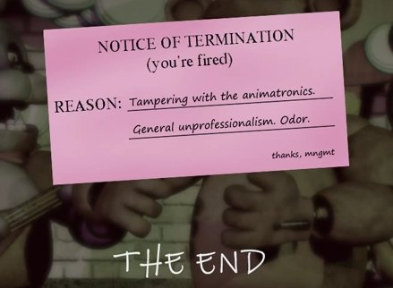

Final Normal
Mike Schmidt debera cumplir con las 6 noches sobreviviendo a los animatrónicos y descubriendo un poco la verdad acerca de la pizzeria. No es un trabajo facil, pero para redimir sus pecados hara lo que sea incluso daria su vida para liberar a las almas de los niños.
Final Despedido
Schmidt vuelve una ultima vez al local con la determinacion de liberar a las almas de los niños alterando a los animatronicos para que sea más facil liberarlos. Sin embargo, cuando estaba a punto de liberarlos es encontrado en medio proceso y le despiden por la manipulacion de los animatronicos y por su mal olor.